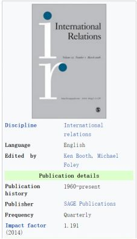
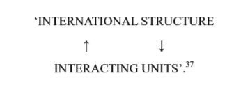

收录于合集

简 介
【 文章原题】
Another Waltz? Methodological Rhetoric and Practice in Theory of International Politics
【作者简介】 Adam RC Humphreys ，雷丁大学政治经济与国际关系学院政治与国际关系系副教授。研究兴趣是国际关系理论，特别是因果关系解释、现实主义和新现实主义、英国学派及其理论与历史的关系。
【 文章来源】International Relations，vol.26，issue4，2012，pages389-408.

【 编译】褚峰熠
【审核】 杨艺华、曲雅倩
核心观点
人们很少关注沃尔兹在实践中是如何处理现实世界问题的。但沃尔兹对新现实主义理论的应用明显不够严密。在《国际政治理论》第一章中，沃尔兹主要研究“方法“，但他的方法没有与他实际理论的性质以及他处理现实世界问题的路径联系起来。他在第一章所论述的方法与他在第七章、第八章中的分析所运用的方法有着明显的脱节。他也认识到，国际政治的特点是复杂的，他曾公开宣称的新实证主义与国际政治复杂性之间的矛盾是很难调和的。由此造成的不一致也有助于解释为什么对他的方法论会产生自相矛盾的理解。其中，最重要的方法论教训可能是：理论与实践并不一定能和谐地结合在一起。
一．沃尔兹的解释性实践
在《国际政治理论》一书中，沃尔兹认为国家行为及其结果在很大程度上取决于国际政治体系的结构。他不是一个结构决定论者，但他认为只有将国际政治解释为“一个结构明确的体系”才可能产生有关国际政治的理论。他根据其排序原则（无政府状态）、单位的性质（功能上没有区别）和各单位之间的能力分布（两极或多极）来界定这一结构，并认为它是通过社会化和竞争发挥作用的。因为无政府主义是按照“自助原则”运作的，他假设“国家寻求确保他们的生存”，并认为这“限制了他们的行为”。他由此推断，“权力平衡是反复形成的，国家往往效仿其他国家的成功政策”。然后，他试图通过探讨经济相互依存的程度和影响以及两极冷战体系的稳定性来证明这一办法的效用。
沃尔兹强调在理论发展中要有创造性，他把“所见的事”和“对它们的解释”区分开来。然而，这种对沃尔兹所陈述的方法论的解读需要一个重要的条件：在大多数情况下，他并没有以新实证主义的方式应用他的理论。
《国际政治理论》第7章的主要目的是用新现实主义来解释为什么美国相对不受通常被称为“相互依存”的增加的影响。与我们对新实证主义者的期望相反，沃尔兹并没有试图具体说明，更不用说检验相关假设和剩余内容，而是声称“相互依存”是不同的。尽管在相互依存和冲突之间的关系上提出了一个看似可检验的命题，但他并没有试图将它置于历史的审视之下，甚至没有说明这一命题是如何得到他的理论支持的。
沃尔兹确实在相互依存、敏感性和脆弱性间作出区分。他认为，就相互依存表示相互敏感而言，这是有误导性的，因为“国家不同程度的独立性和另一些国家的依赖程度的复杂关系和相互作用”。这种区分对沃尔兹来说是一件很有意义的事情，让他可以排除强权和弱国之间真正的相互依存（因为前者只是对后者的行为敏感）， 把重点放在大国之间的关系上。这是新现实主义的核心领域：虽然沃尔兹没有提出明确的假设，但他的理论确实提供了考虑无政府状态下的自助如何影响大国间相互依存前景的基础。他的结论是，相互依存“随着大国数量的减少而趋于减少”。然而，沃尔兹对敏感性和脆弱性之间的区分让他的理论和他的实质性论点之间的关系受到质疑。沃尔兹承认，他的脆弱性概念不是来自新现实主义，而是来自于“相互依存”的“日常使用”术语。虽然他坚持从结构的角度思考和运用“系统的相互依存的概念”的重要性，但他并没有具体从独特的新现实主义角度来说明假说。
在《国际政治理论》的第八章中，沃尔兹在发展他的实质性解释主张时，以非新实证主义的方式，在借鉴了新现实主义的基础上，思考两极和多极系统的相对稳定性。非结构性因素在两极系统中可能没有在多极系统中那么突出，这使他得出结论，前者比后者更稳定。
沃尔兹坚持认为，假设应该被推断和检验。然而，从单元层次因素中抽象出来的理论不可能推断出结构因素与单元层次因素之间的关系假说。在第七章中，沃尔兹采用的是一种启发式的新现实主义，而不是一种新实证主义。这个理论决定了他所研究的问题的类型（根据极性来定义不同类型系统的稳定性），提供他所依据的概念词汇（包括结构、无政府状态、自助、大国、利益和能力等概念），并塑造了他讨论的经验焦点（与可能防止平衡行为发生的因素有关）。然而，理论与实证讨论之间的关系严格来说是不确定的：沃尔兹的实质性的解释性的主张，不能以我们所期望的方式从理论中衍生出一个坚定的新实证主义者。这种模式在沃尔兹后来的作品中得到了再现。
值得注意的是，沃尔兹的新实证主义并不单纯。他认识到理论不能直接检验。他在国际政治理论中警告说，他的理论的“预测是不确定的”，“尽管各国可能倾向于根据理论的预期对国际限制和激励作出反应” ，国家的政策和行动也受其内部条件的形塑。
为什么沃尔兹最终发展出一种局部理论，其中一个重要迹象是，他在调和他所宣称的新实证主义与他将国际政治概念化为一个复杂的体系时所遇到的困难。沃尔兹复杂性的思考对他的方法论方法产生了重要的影响，这为他为何如此谨慎地应用新现实主义提供了重要的见解，以及为什么他的方法会受到如此不同的解释。
二．复杂性与新实证主义
虽然沃尔兹试图发展一个理论上更严格的现实主义思想的版本，但核心是方法论上的张力。一方面，他认为理论通过明确区分自变量和因变量来解释行为规律。另一方面，他认为国际政治是一个结构和相互作用的单元相互影响的复杂系统。
（一）复杂性
沃尔兹认为，国际政治“既复杂又有组织”。为了处理具有国际政治有组织的复杂性，他建议我们“尝试设想政治制度”如下：“在一个层次上，一个系统由一个结构组成”，它是“系统级别的组件，它使人们能够将单元看作是一个集合，而不是单纯的集合。在另一个层次上，系统由相互作用的单元组成。”这意味着结构使一个系统比其各部分之和更多（因此有必要采取一种系统办法）：这些单元的组织“影响他们的行为和相互作用”的方式，仅仅从他们的特点和目的角度是无法预测的。然而，它也意味着系统本身是由单元相互作用构成的，因此结构和相互作用的单元是相互影响的。沃尔兹对此作了如下说明：

他明确指出，“只有当系统的结构与其相互作用的单元相互影响时，才需要系统方法”。根据沃尔兹的说法，建立在这些基础之上的理论的“适当关切”是双重的。首先，它应该追踪不同国际体系的预期生涯，例如，通过显示可能的持久性和和平性。第二，它应该“显示系统的结构如何影响相互作用的单元以及它们如何反过来影响结构”。虽然这一任务构成了国际政治理论的理论核心，但实际上沃尔兹只关注系统的结构如何影响单元，而撇开这些单元如何影响这一结构的问题不谈。
沃尔兹承认，用纯粹的结构解释是不够的：在现实中，结构“并不是唯一起作用的原因”，因此，纯粹的结构理论只能解释国家所受压力的影响，而不能解释国家对这些压力的反应。他认为，为了揭示结构的因果效应，有必要将它表示为一个自变量。
（二）新实证主义与结构理论
沃尔兹明确寻求构建因果理论，认为理论关注的是“观察到的事物构成意义的联系和原因”，而且，“国际政治理论只有当政治结构以确定其因果效应的方式加以界定时才能成功”。发展一种关于结构对国家行为的影响及影响结果的因果理论，需要将结构作为一个独立变量加以孤立。这反过来又需要一个限制性的定义：只有当系统层级的原因起作用时，人们才应该遵循系统方法。然后，我们必须谨慎地将系统单元的属性和相互作用排除在其结构的定义之外。如果一个人不这样做，那么就不能给出系统层级的解释。我们甚至无法说出系统对单位的影响有多大。这在整个国际政治理论中形成了一种常见的重复：每次沃尔兹把批评他的人反对的东西说成是一种过于严格的理论假设，他认为，为了隔离结构的因果效应，这是必要的。
总之，沃尔兹发展了一种专门的结构理论，它是围绕着狭义和限制性的结构定义建立起来的。因为与他的新实证主义方法论一致，他认为这是国际政治理论中因果理论的一项要求。
（三）结构和单元层次的原因相结合
沃尔兹认识到同时利用结构和单元层次原因的解释的重要性。沃尔兹把他所面临的困难描述为“衡量单元层次和结构性原因”。这意味着，一方面，可能表明结构因素如何影响行为和结果（这就是新现实主义所做的），另一方面，显示单元级因素如何影响行为和结果（这就是单元层次理论所做的），但很难确定“无论是结构上的原因还是单元层面的原因都是较强的”。沃尔兹是对的，事实上，新现实主义缺乏任何依据来判断结构和单元层面因素的相对权重，更不用说揭示它们是如何相互作用的了。然而，问题比这更深。从技术上讲，新现实主义甚至没有展示结构如何影响行为和结果：因为结构是从单元层次的因素中抽象出来的，在没有单元层次的因素的情况下，结构将如何影响行为和结果。沃尔兹的问题在于，他对结构的定义正是从那些单元层次的中抽象出来的，而抽象出来的因素实际上是构成并不断地重建它的。更根本的原因是，在他对一个复杂系统的概念化过程中，结构和相互作用的单元是相互影响的：它们并不是分开的，但从某种意义上说，它们是彼此的因果关系。沃尔兹不能将新现实主义与非理性对应物结合起来的真正原因是后者将作为一种原因，即国际政治制度的结构，将其视为一种很难区分的影响。
鉴于沃尔兹认为国际体系的特点是有组织的复杂性以及他对新实证主义的承诺，新实证主义似乎在本质上被排除在外，不能提供更多的解释。
（四）方法论含义
认为沃尔兹揭示了对复杂系统采用新实证主义方法的内在局限性还为时过早。然而，他的继任者们一直在关注如何将单元层级的因素纳入新现实主义框架的问题。如果说沃尔兹把新实证主义理论运用到国际政治的复杂性上所遇到的困难有助于说明新现实主义的部分性质，从而解释为什么沃尔兹以一种启发式的方式，而不是一种新实证主义的方式，那么，它们也有助于理解对沃尔兹的方法论方法的许多不同的解释。《国际政治理论》中有三个不同的部分。在第一章中，他概述了一种新实证主义方法论，这是当代关于归纳主义和简单证伪主义的局限性以及理论建构中创造性的需要的典型论争。在第2-6章中，他讨论了系统理论的本质，并发展了自己的理论。这些章节以限制性定义和假设的形式阐明并证明了妥协的合理性，这些妥协是为了调和其新实证主义和组织性的复杂性所必需的。在第7-9章中，沃尔兹试图证明经验主义的回报，这也说明了他不能以严格的新实证主义的方式运用他的新现实主义理论。
三．超越沃尔兹的方法论困境
超越沃尔兹的方法论困境可以通过探索沃尔兹作品的两个要素来探讨，这两个要素似乎超越了他局限于国际政治理论的方法论限制。首先，认为结构是一个原因，而不是一个有效的原因；其次，理论必须与分析区分开来。
（一）反思因果分析
正如我们所看到的，沃尔兹对新实证主义的修辞学承诺与他运用他的理论的方式是不相称的。虽然他使用高度限制性的假设和定义来将结构表示为自变量，但他以启发式的方式引用了结果理论。这构成了一个隐含的认识，即结构并不是发挥作用的唯一原因，单元层级因素的存在排除了结构决定论。
然而，在他讨论社会化和选择（结构发挥其因果效应的手段）时，沃尔兹提出了一种更有力的主张，即“结构是原因”，而不是“从意义上说，A是X的原因，B是Y的原因”。沃尔兹的观点是，结构不同于产生固定和特殊效果的原因：结构是一种限制某些可能性并使其他可能性得以实现的条件，但它本身并没有决定结果。
如果我们的任务是解释某一特定事件是如何发生、为什么发生，那么我们很可能认为结构不是一个有效的原因，而是一种可能性的条件：一种通过使某些可能性成为可能而排除另一些可能性而促成结果的事业，但它并不能决定这一结果。这样做，我们不会丧失解释的完整性，因为原则上，我们仍然可以制定一种解释，其中包括与所涉事件的发生有关的所有因素。结构可以产生决定性的效果，因为就所涉事件而言，它排除了一些可能性，而将另一些可能性包含在内。
沃尔兹在《国际政治理论》中的部分方法论困境来自于他想要发展一个关于结构在任何和所有条件下的影响的可推广的公式。鉴于他将国际政治概念化为一个复杂的体系，这要求同时把结构看作是因果关系，这是他无法做到的。如果我们用单个的因果分析来满足自己，这个问题就不会出现，因为这样就足以说明国际政治制度的结构是如何促成某些行为而排除另一些行为的，如果不继续展示实际发生的事情，就会改变这种结构。
因此，把结构视为可能性的一个条件，集中于发展单一的因果解释，并不能严格地构成沃尔兹问题的解决办法，而且其本人从来没有明确主张过这一步。尽管如此，对于他应用理论的困难的一些评论似乎确实加强了这种方法的潜在优点。
（二）理论与理论应用
沃尔兹坚持认为，理论不可能包括所有可能被认为重要的变量。批评新现实主义无法解释“国家的特殊政策”的人误解了这一理论的本质。在他后来发展和论证他的方法时，他更进一步，从根本上区分了“理论”和“分析”。 这不仅是对新现实主义被广泛宣传的局限性的追溯性辩护，也反映了沃尔兹在面对现实世界的问题时是如何利用他的理论的。此外，它还抓住了一些理论如何解释单一的因果关系。
不能从理论中推断预测的说法似乎与沃尔兹独特的新实证主义坚持的观点相矛盾，即假说必须被推断和检验。
理论和分析之间作出区别的意义是深远的，因为如果假设不是从新现实主义中直接推断出来的，就很难明白为什么它是必要的。正如沃尔兹所坚持的那样，为了识别一组离散的结构效应，必须作出限制性的假设。如果新现实主义的作用是帮助我们思考结构如何在特定情况下塑造可能的结果范围（而不是产生可检验的假设），那么，它肯定是正确的，发展一个尽可能完整的结构概念，而不是制定一种最低限度的定义，以表示它作为一个自变量？而且，如果理论和分析之间的关系是不确定的，那么假设检验就不是评价理论的唯一方法。毕竟，沃尔兹的主张是，尽管新现实主义的预测是不确定的，但它仍然是有用的。如果是这样的话，那么它和其他这类理论必须由沃尔兹在《国际政治理论》第一章中概述的那种新实证主义的方式来帮助解释。
如果新现实主义的作用是帮助我们思考结构如何在特定情况下塑造可能的结果范围(而不是产生可检验的假设)，那么，发展一个尽可能完整的结构概念当然是正确的，而不是用自变量来表示最小定义。更进一步，如果理论和分析之间的关系是不确定的，那么，假设检验并不是评价理论的唯一方法。
点击左下角“ 阅读原文 ”获取原文pdf版
**
**
声明
此文为国政学人微信公众平台外文编译系列文章之一，由国政学人编辑首发，不代表本平台观点。欢迎转发分享，转载请务必注明来源。如有问题，请联系guozhengxueren@163.com
更多阅读
国政学人 （ID：guozhengxueren)
为方便学人及时阅读高质量文章
别忘把国政学人设置 星标 哦~